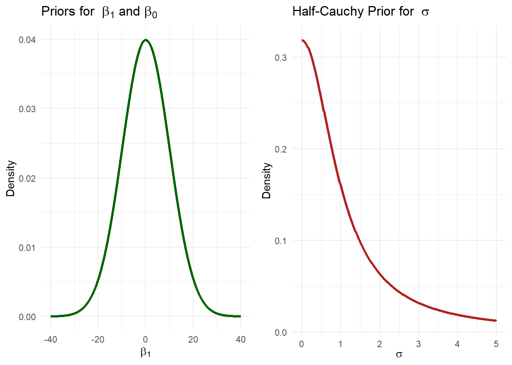

6 Prior Tweaks and More
6.1 Learnings
- Outcomes
– LO1: Explain the difference between Bayesian and frequentist concepts of statistical inference.
– LO2: Demonstrate how to specify and fit simple Bayesian models with appropriate attention to the role of the prior distribution and the data model.
– LO4: Demonstrate proficiency in using statistical software packages (R) to specify and fit models, assess model fit, detect and remediate non-convergence, and compare models.
– LO5: Engage in specifying, checking and interpreting Bayesian statistical analyses in practical problems using effective communication with health and medical investigators.
- Objectives
By the end of this week you should be able to:
– Understand different aspects of prior distributions for variance parameter.
– Explain which prior to use for Bayesian model with multiple variables.
– Compare Bayesian and frequentist models.
– Interpret real-life problems in Bayesian context.
6.2 Prior Options
In our previous lecture, using Bayesian model, we explained the effect of body mass index (BMI) on bone mineral density (BMD). We used weakly informative prior, and we discussed in one of our previous lectures that use of weakly informative priors are common in modern Bayesian modeling, as it balances interpretability and robustness of the posterior distribution. Now, we will explain how different types of prior distributions can be used for the model variance and slope parameters.
6.3 Prior for Variability
Historically, Bayesian models used Inverse-Gamma priors for variability parameters, because it has support on positive values and has nice mathematical properties (conjugate prior for the normal distribution). However, in Bayesian model (e.g., Bayesian regression), this might cause problems. For example, to represent non-informativeness, we can consider \(\text{IG}(a=0.001,b=0.001)\), which uses very small values for the hyperparameters of the distribution. Even though \(\text{IG}(a=0.001,b=0.001)\) appears non-informative, it biases the model toward very small variance values. It is “too informative” in a negative way, not because it is strong, but because it pretends to be weak while still influencing the outcome. Furthermore, the use of \(\text{IG}(a,b)\) often favours small variances, which can lead to underestimating uncertainty in group-level effects. In addition, in regression settings, if the model is complex, the use of \(\text{IG}(a,b)\) can make it difficult to achieve convergence in the MCMC sampling for the variance parameter, as the distribution can become spiky near zero, leading to unstable behavior during inference.
We have already discussed in our previous lecture that we can approximate the inverse Gamma prior with Student-t distribution. Still this will not aid some of the issues that we mentioned, such as not having a heavy tail. In today’s lecture will learn about some other distributions that can provide reasonable solutions.
6.3.1 Half-Cauchy Prior
To avoid the issues with inverse Gamma distribution, the half-Cauchy distribution (i.e., a Cauchy distribution restricted to positive values) is popularly used. Half-Cauchy also behaves as weakly informative prior and provides better inference (depending on the choice of hyper paramters).
We prefer using the half-Cauchy prior for the parameter \(\sigma\) because it has several useful properties. It has heavy tails, which means it allows for large values of \(\sigma\) when the data support it, rather than cutting them off or overly constraining them. Unlike the Inverse Gamma prior, it is less informative near zero and does not push the variance toward small values, which can be especially important in hierarchical models. It also provides a form of regularisation by gently pulling estimates toward smaller values without being too aggressive, allowing the data to guide the estimates more naturally.
One of the issues may arise for Half-Cauchy \(\sigma\) prior in hierarchical Bayesian model relates to the non-conjugacy. However, use of cleaver MCMC sampling algorithm such as HMC-NUTS can provide a solution to this problem.
Now, we can rewrite the DAG we provided in our last lecture related to the BMD model, where we replace the Inverse Gamma prior by the Half-Cauchy.
Here, we use the Half-Cauchy prior distribution separately for the variance parameter instead of the Inverse Gamma distribution, while keeping the priors for \(\beta_0\) and \(\beta_1\), as normal distributions \(N(0,10^2)\), which gives us the following prior distributions:
Code
library(ggplot2)
library(tidyverse)
x_norm <- seq(-40, 40, length.out = 500)
normal_density <- dnorm(x_norm, mean = 0, sd = 10)
df_beta <- tibble(
x = x_norm,
density = normal_density
)
p1 <- ggplot(df_beta, aes(x, density)) +
geom_line(color = "steelblue", size = 1.2) +
labs(
title = expression("Prior for " ~ beta[0]),
x = expression(beta[0]),
y = "Density"
) +
theme_minimal()
p2 <- ggplot(df_beta, aes(x, density)) +
geom_line(color = "darkgreen", size = 1.2) +
labs(
title = expression("Priors for " ~ beta[1] * " and " * beta[0]),
x = expression(beta[1]),
y = "Density"
) +
theme_minimal()
x_sigma <- seq(0.001, 5, length.out = 500)
half_cauchy_density <- dcauchy(x_sigma, location = 0, scale = 1) # Half-Cauchy with scale = 1
df_sigma <- tibble(
x = x_sigma,
density = half_cauchy_density
)
p3 <- ggplot(df_sigma, aes(x, density)) +
geom_line(color = "firebrick", size = 1.2) +
labs(
title = expression("Half-Cauchy Prior for " ~ sigma),
x = expression(sigma),
y = "Density"
) +
theme_minimal()
#library(patchwork)
#(p1 | p2 | p3) + plot_annotation(title = "Prior Distributions")
library(gridExtra)
grid.arrange(p2,p3,ncol=2)
Hence, we get the posterior summaries based on the Half-Cauchy prior distribution with hyper-parmater one as follows. Note that for ‘brms’ R package, we define the prior distributions for \(\sigma\) instead of \(\sigma^2\), which we write:
prior(cauchy(0, 1), class = “sigma”)
Code
library(brms)
library(tidyverse)
bmd_data <- read.csv("bmd_restricted.csv")
bmd_data$bmi <- bmd_data$weight_kg/(bmd_data$height_cm/100)^2
bmd_data <- tibble(
BMD = bmd_data$bmd,
BMI = bmd_data$bmi,
)
# model
bmd_model <- brm(
formula = BMD ~ BMI,
data = bmd_data,
family = gaussian(),
prior = c(
prior(normal(0, 10), class = "b", coef = "BMI"), # N(mean, sd) Slope priors
prior(normal(0, 10), class = "Intercept"), # N(mean, sd) Intercept prior
prior(cauchy(0, 1), class = "sigma") # Half-Cauchy prior for sigma
),
iter = 2000,
chains = 1,
cores = 3,
seed = 123
)
SAMPLING FOR MODEL 'anon_model' NOW (CHAIN 1).
Chain 1:
Chain 1: Gradient evaluation took 4e-05 seconds
Chain 1: 1000 transitions using 10 leapfrog steps per transition would take 0.4 seconds.
Chain 1: Adjust your expectations accordingly!
Chain 1:
Chain 1:
Chain 1: Iteration: 1 / 2000 [ 0%] (Warmup)
Chain 1: Iteration: 200 / 2000 [ 10%] (Warmup)
Chain 1: Iteration: 400 / 2000 [ 20%] (Warmup)
Chain 1: Iteration: 600 / 2000 [ 30%] (Warmup)
Chain 1: Iteration: 800 / 2000 [ 40%] (Warmup)
Chain 1: Iteration: 1000 / 2000 [ 50%] (Warmup)
Chain 1: Iteration: 1001 / 2000 [ 50%] (Sampling)
Chain 1: Iteration: 1200 / 2000 [ 60%] (Sampling)
Chain 1: Iteration: 1400 / 2000 [ 70%] (Sampling)
Chain 1: Iteration: 1600 / 2000 [ 80%] (Sampling)
Chain 1: Iteration: 1800 / 2000 [ 90%] (Sampling)
Chain 1: Iteration: 2000 / 2000 [100%] (Sampling)
Chain 1:
Chain 1: Elapsed Time: 0.06 seconds (Warm-up)
Chain 1: 0.045 seconds (Sampling)
Chain 1: 0.105 seconds (Total)
Chain 1: Code
summary(bmd_model) Family: gaussian
Links: mu = identity; sigma = identity
Formula: BMD ~ BMI
Data: bmd_data (Number of observations: 169)
Draws: 1 chains, each with iter = 2000; warmup = 1000; thin = 1;
total post-warmup draws = 1000
Regression Coefficients:
Estimate Est.Error l-95% CI u-95% CI Rhat Bulk_ESS Tail_ESS
Intercept 0.42 0.07 0.29 0.57 1.00 1273 773
BMI 0.01 0.00 0.01 0.02 1.00 1233 872
Further Distributional Parameters:
Estimate Est.Error l-95% CI u-95% CI Rhat Bulk_ESS Tail_ESS
sigma 0.16 0.01 0.14 0.17 1.00 700 608
Draws were sampled using sampling(NUTS). For each parameter, Bulk_ESS
and Tail_ESS are effective sample size measures, and Rhat is the potential
scale reduction factor on split chains (at convergence, Rhat = 1).Code
#posterior_summary(bmd_model)
#plot(bmd_model)The model result suggests that the standard deviation (\(\sigma\)) of residuals is estimated to be around 0.16, with the uncertainty around this estimate being quite low (Est.Error = 0.01). The credible interval for sigma is between 0.14 and 0.17, and the MCMC sampling appears to have converged well based on the Rhat and ESS values.
6.3.2 Exponential Prior
Another potential caldidate distribution for replacing the Inverse Gamma distribution for the variability parameter \(\sigma\) is the Exponential distribution, i.e., \(\sigma \sim \text{Exp}(\lambda)\), with \(\lambda\) as the hyper-parameter. This distribution is mathematically simple and computationally efficient. Using an exponential prior with a small rate (like \(\lambda = 1\)) can be seen as a weakly informative prior. This means it doesn’t strongly influence the outcome but still provides some regularisation (keeping variance from growing excessively). This is helpful when you have limited prior knowledge about the variance, as it avoids over-penalising large values of the variance while still discouraging very small values.
We can get similar result using exponential prior distribution with rate hyper-parameter \(\lambda=1\). Here in R code we need to replace
prior(cauchy(0, 1), class = “sigma”)
by
prior(exponential(1), class = “sigma”)
to get posterior distribution of the model parameter \(\sigma^2\).
In particular, if we use \(\text{Half-Cauchy}(0,\tau=1)\) and \(\text{Exp}(\lambda=1)\), then this gives us the following prior distributions:
Code
library(ggplot2)
library(tidyverse)
exponential_density <- dexp(x_sigma, rate = 1) # Exponential with rate = 1
df_exp_sigma <- tibble(
x = x_sigma,
density = exponential_density
)
p4 <- ggplot(df_exp_sigma, aes(x, density)) +
geom_line(color = "darkorchid", size = 1.2) +
labs(
title = expression("Exponential Prior for " ~ sigma),
x = expression(sigma),
y = "Density"
) +
theme_minimal()
library(gridExtra)
grid.arrange(p3,p4,ncol=2)6.4 Prior for Slope
6.4.1 Weakly Informative & Informative
Suppose, instead using weakly informative prior for \(\beta_1\) (the slope for BMI), we want to use an informative prior. This refers to considering one unit increase in BMI, BMD increases by approximately 0.05 units on average, say we also knowfrom the past data that the standard deviation related to this is very low, i.e., 0.01. Hence, we write the prior distribution as: \(\beta_1 \sim N(0.05, 0.01^2)\).
Code
library(brms)
bmd_model_inform <- brm(
formula = BMD ~ BMI,
data = bmd_data,
family = gaussian(),
prior = c(
prior(normal(0.05, 0.01), class = "b", coef = "BMI"), # Informative prior for beta_1
prior(normal(0, 10), class = "Intercept"), # Intercept prior
prior(cauchy(0, 1), class = "sigma") # Half-Cauchy prior for sigma
),
iter = 2000,
chains = 1,
cores = 3,
seed = 123
)
SAMPLING FOR MODEL 'anon_model' NOW (CHAIN 1).
Chain 1:
Chain 1: Gradient evaluation took 3.6e-05 seconds
Chain 1: 1000 transitions using 10 leapfrog steps per transition would take 0.36 seconds.
Chain 1: Adjust your expectations accordingly!
Chain 1:
Chain 1:
Chain 1: Iteration: 1 / 2000 [ 0%] (Warmup)
Chain 1: Iteration: 200 / 2000 [ 10%] (Warmup)
Chain 1: Iteration: 400 / 2000 [ 20%] (Warmup)
Chain 1: Iteration: 600 / 2000 [ 30%] (Warmup)
Chain 1: Iteration: 800 / 2000 [ 40%] (Warmup)
Chain 1: Iteration: 1000 / 2000 [ 50%] (Warmup)
Chain 1: Iteration: 1001 / 2000 [ 50%] (Sampling)
Chain 1: Iteration: 1200 / 2000 [ 60%] (Sampling)
Chain 1: Iteration: 1400 / 2000 [ 70%] (Sampling)
Chain 1: Iteration: 1600 / 2000 [ 80%] (Sampling)
Chain 1: Iteration: 1800 / 2000 [ 90%] (Sampling)
Chain 1: Iteration: 2000 / 2000 [100%] (Sampling)
Chain 1:
Chain 1: Elapsed Time: 0.07 seconds (Warm-up)
Chain 1: 0.031 seconds (Sampling)
Chain 1: 0.101 seconds (Total)
Chain 1: Code
summary(bmd_model_inform) Family: gaussian
Links: mu = identity; sigma = identity
Formula: BMD ~ BMI
Data: bmd_data (Number of observations: 169)
Draws: 1 chains, each with iter = 2000; warmup = 1000; thin = 1;
total post-warmup draws = 1000
Regression Coefficients:
Estimate Est.Error l-95% CI u-95% CI Rhat Bulk_ESS Tail_ESS
Intercept 0.36 0.07 0.23 0.50 1.00 1379 905
BMI 0.02 0.00 0.01 0.02 1.00 1364 830
Further Distributional Parameters:
Estimate Est.Error l-95% CI u-95% CI Rhat Bulk_ESS Tail_ESS
sigma 0.16 0.01 0.14 0.17 1.00 482 601
Draws were sampled using sampling(NUTS). For each parameter, Bulk_ESS
and Tail_ESS are effective sample size measures, and Rhat is the potential
scale reduction factor on split chains (at convergence, Rhat = 1).From the results related to informative prior for \(\beta_1\), we can say that the informative prior for \(\beta_1\) tightly constrained the estimate of the effect of BMI on BMD, yielding a posterior mean estimate of 0.02 with a narrow credible interval \([0.01, 0.02]\). The model shows very high precision for this parameter, with low uncertainty accordingly.
6.4.2 Comparison
Now we will provide a comparison of the \(\beta_1\) estimates from two models: one where we used an informative prior, i.e., \(\beta_1\sim N(0.05,0.01)\) and another where we used a weakly informative prior \(\beta_1\sim N(0,10^2)\).
Code
library(ggplot2)
library(tibble)
x_vals <- seq(-1, 1, length.out = 1000)
prior_df <- tibble(
beta_1 = x_vals,
Informative = dnorm(x_vals, mean = 0.05, sd = sqrt(0.01)),
Weakly_Informative = dnorm(x_vals, mean = 0, sd = 10)
)
prior_df_long <- pivot_longer(
prior_df,
cols = c("Informative", "Weakly_Informative"),
names_to = "Prior_Type",
values_to = "Density"
)
p1 <- ggplot(prior_df_long, aes(x = beta_1, y = Density, color = Prior_Type, fill = Prior_Type)) +
geom_line(size = 1.2) +
geom_area(alpha = 0.2) +
labs(
title = expression("Prior for " ~ beta[1]),
x = expression(beta[1] ~ "Prior"),
y = "Density",
color = "",
fill = ""
) +
theme_minimal() +
theme(legend.position = "bottom")
library(brms)
library(bayesplot)
library(tidyverse)
posterior_inform <- as_draws_df(bmd_model_inform)
posterior_weak <- as_draws_df(bmd_model)
beta1_samples <- bind_rows(
posterior_inform %>% select(`b_BMI`) %>% mutate(Model = "Informative Prior"),
posterior_weak %>% select(`b_BMI`) %>% mutate(Model = "Weakly Informative Prior")
)
p2 <- ggplot(beta1_samples, aes(x = b_BMI, fill = Model, color = Model)) +
geom_density(alpha = 0.4) +
labs(
title = expression("Posterior for " ~ beta[1]),
x = expression(beta[1] ~ "Posterior"),
y = "Density",
fill = "",
color = ""
) +
theme_minimal() +
theme(
legend.position = "bottom"
)
library(gridExtra)
grid.arrange(p1, p2, ncol = 2)
This above plots show how two different types of prior information affect our estimate of a parameter, \(\beta_1\). The blue curve represents the informative prior, this results in a distribution indicating higher certainty. The red curve represents the weakly informative prior, meaning we have less prior knowledge about \(\beta_1\). This results in a distribution that is more spread out, indicating less certainty.
6.5 Bayesian vs. Frequentist
Now we explain and compare the Bayesian and frequentist estimates, where we use informative prior distribution, i.e., \(\beta_1\sim N(0.05,0.01)\).
Code
library(jtools)
lm_model <- lm(BMD ~ BMI, data = bmd_data)
jtools::summ(lm_model)| Observations | 169 |
| Dependent variable | BMD |
| Type | OLS linear regression |
| F(1,167) | 27.98 |
| R² | 0.14 |
| Adj. R² | 0.14 |
| Est. | S.E. | t val. | p | |
|---|---|---|---|---|
| (Intercept) | 0.42 | 0.07 | 6.11 | 0.00 |
| BMI | 0.01 | 0.00 | 5.29 | 0.00 |
| Standard errors: OLS |
Code
lm_coef <- coef(summary(lm_model))
bmi_est <- lm_coef["BMI", "Estimate"]
bmi_se <- lm_coef["BMI", "Std. Error"]
ci_low <- bmi_est - 1.96 * bmi_se
ci_high <- bmi_est + 1.96 * bmi_se
post <- as_draws_df(bmd_model_inform)
post_bmi <- post$b_BMI
bayes_mean <- mean(post_bmi)
bayes_ci <- quantile(post_bmi, probs = c(0.025, 0.975))
p <- ggplot() +
geom_density(aes(x = post_bmi), fill = "skyblue", alpha = 0.5, color = NA) +
geom_vline(xintercept = bmi_est, color = "red", size = 1) +
geom_vline(xintercept = ci_low, linetype = "dashed", color = "red", size = 0.8) +
geom_vline(xintercept = ci_high, linetype = "dashed", color = "red", size = 0.8) +
geom_vline(xintercept = bayes_mean, color = "blue", size = 1) +
geom_vline(xintercept = bayes_ci[1], linetype = "dashed", color = "blue", size = 0.8) +
geom_vline(xintercept = bayes_ci[2], linetype = "dashed", color = "blue", size = 0.8) +
labs(
title = "Bayesian (informative) vs Frequentist Estimate of BMI",
subtitle = "Red: Frequentist (Mean & 95% Confidence Interval)\nBlue: Bayesian (Posterior Mean & 95% Credible Interval)",
x = "Coefficient for BMI",
y = "Density"
) +
theme_minimal() +
theme(plot.title = element_text(size = 14, face = "bold"),
plot.subtitle = element_text(size = 12))
library(plotly)
ggplotly(p)The above plot shows the estimates of the BMI coefficient (\(\beta_1\)) for BMD using both frequentist and Bayesian methods. On the x-axis, we see the coefficient for BMI, ranging from approximately 0.008 to 0.024, while the y-axis represents density, showing the distribution of the estimates.
In Bayesian inference, the blue shaded area represents our posterior distribution of \(\beta_1\), which incorporates both prior information and observed data. The vertical blue solid line indicates our Bayesian posterior mean, and the vertical blue dashed lines show the 95% credible interval. This interval represents the range within which \(\beta_1\) lies with 95% probability, given our prior and the data. The Bayesian approach provides a more nuanced estimate that reflects both our prior beliefs and the observed data, resulting in a posterior distribution that can be more or less spread out depending on the prior and the data.
Whereas, the frequentist approach relies solely on the observed data to provide point estimates and confidence intervals. The vertical red solid line represents our frequentist maximum likelihood estimate (MLE) of \(\beta_1\), and the vertical red dashed lines show the 95% confidence interval. This interval represents the range within which \(\beta_1\) would lie in 95% of repeated samples, assuming the true value is fixed.
The key difference highlighted by this plot is how each method estimates and interprets \(\beta_1\). We can see that the informative prior shifts the mean posterior distribution. We can also see that the Bayesian credible interval is much narrower due to the influence of the informative prior, suggesting that prior information has influenced the estimate.
6.6 Further Model Development
Gaussian Context
Following the BMD example, where we explore the influence of BMI on BMD. Now, we might want to ask: What role does ‘Age’ or ‘Sex’ of the patient play in this relationship?
As people age, their BMD naturally decreases over time, and age also influences factors like BMI. Similarly, sex affects both BMI and BMD, with women being more likely to experience a decline in BMD, particularly in conditions like osteoporosis. These factors age and sex may act as confounders, influencing both BMI and BMD. Hence, we write the DAG using these variables:
In this case, the estimand is the specific effect of BMI on BMD, while accounting for the influence of age and sex as confounders. The goal is to isolate the effect of BMI on BMD after adjusting for these other variables.
The estimator we define here is the Bayesian model, i.e., the Bayesian multiple linear regression model to get the posterior distributions for the model parameters. This model adjusts for confounders like age and sex, helping us to estimate the causal effect of BMI on BMD.
The estimate is the posterior distribution of the estimand with some numerical values, such as mean or median derived from the posterior distribution. For example, if the posterior mean estimate is 0.03, this could represent the change in BMD associated with a one-unit increase in BMI, after accounting for the effects of age and sex.
6.6.1 Model & DAG
We now develop the Bayesian model with all these four variables. Hence, we write the Bayesian model as:
\[ \text{BMD}_i \sim N(\beta_0 + \beta_1 \cdot \text{BMI}_i + \beta_2 \cdot \text{Age}_i + \beta_3 \cdot \text{Sex}_i, \sigma^2) \]
Where, \(\beta_0\) is the intercept, \(\beta_1\) is the coefficient for BMI, \(\beta_2\) is the coefficient for Age, \(\beta_3\) is the coefficient for Sex (with a reference category; for example, if Sex is binary, it could be “Male” vs. “Female”). This model also includes the variability \(\sigma\) of the error term. Now, assuming weakly informative prior we write:
- \(\beta_0 \sim N(0, 10^2)\)
- \(\beta_1 \sim N(0, 10^2)\)
- \(\beta_2 \sim N(0, 10^2)\)
- \(\beta_3 \sim N(0, 10^2)\)
- \(\sigma \sim \text{Half-Cauchy}(0, 1)\)
Note that the model equation can be also written as:
\[ \text{BMD}_i = \beta_0 + \beta_1 \cdot \text{BMI}_i + \beta_2 \cdot \text{Age}_i + \beta_3 \cdot \text{Sex}_i + \epsilon_i \]
where, \(\epsilon_i\) is the error term of the model.
Hence, we draw the DAG for this Bayesian model with prior and hyper-prior parameters as:
6.6.2 Results & MCMC Diagnostics
Now, we implement the Bayesian hierarchical model for this DAG, where we use weakly-informative priors for the model parameters.
Code
library(brms)
library(tidyverse)
bmd_data <- read.csv("bmd_restricted.csv")
bmd_data$bmi <- bmd_data$weight_kg/(bmd_data$height_cm/100)^2
bmd_data <- tibble(
BMD = bmd_data$bmd,
BMI = bmd_data$bmi,
Age = bmd_data$age,
Sex = as.factor(bmd_data$sex)
)
bmd_model_multi <- brm(
formula = BMD ~ BMI + Age + Sex,
data = bmd_data,
family = gaussian(),
prior = c(
prior(normal(0, 10), class = "b", coef = "BMI"), # N(mean, sd)
prior(normal(0, 10), class = "b", coef = "Age"), # N(mean, sd)
prior(normal(0, 10), class = "b", coef = "SexM"), # N(mean, sd)
prior(normal(0, 10), class = "Intercept"), # N(mean, sd)
prior(cauchy(0, 1), class = "sigma") # Half-Cauchy prior for sigma
),
iter = 2000,
chains = 1,
cores = 3,
seed = 123
)
SAMPLING FOR MODEL 'anon_model' NOW (CHAIN 1).
Chain 1:
Chain 1: Gradient evaluation took 6e-05 seconds
Chain 1: 1000 transitions using 10 leapfrog steps per transition would take 0.6 seconds.
Chain 1: Adjust your expectations accordingly!
Chain 1:
Chain 1:
Chain 1: Iteration: 1 / 2000 [ 0%] (Warmup)
Chain 1: Iteration: 200 / 2000 [ 10%] (Warmup)
Chain 1: Iteration: 400 / 2000 [ 20%] (Warmup)
Chain 1: Iteration: 600 / 2000 [ 30%] (Warmup)
Chain 1: Iteration: 800 / 2000 [ 40%] (Warmup)
Chain 1: Iteration: 1000 / 2000 [ 50%] (Warmup)
Chain 1: Iteration: 1001 / 2000 [ 50%] (Sampling)
Chain 1: Iteration: 1200 / 2000 [ 60%] (Sampling)
Chain 1: Iteration: 1400 / 2000 [ 70%] (Sampling)
Chain 1: Iteration: 1600 / 2000 [ 80%] (Sampling)
Chain 1: Iteration: 1800 / 2000 [ 90%] (Sampling)
Chain 1: Iteration: 2000 / 2000 [100%] (Sampling)
Chain 1:
Chain 1: Elapsed Time: 0.173 seconds (Warm-up)
Chain 1: 0.085 seconds (Sampling)
Chain 1: 0.258 seconds (Total)
Chain 1: Code
#prior_summary(bmd_model_multi, all = FALSE)
print(prior_summary(bmd_model_multi, all = FALSE), show_df = FALSE)b_Age ~ normal(0, 10)
b_BMI ~ normal(0, 10)
b_SexM ~ normal(0, 10)
Intercept ~ normal(0, 10)
<lower=0> sigma ~ cauchy(0, 1)Code
print(summary(bmd_model_multi), digits=3) Family: gaussian
Links: mu = identity; sigma = identity
Formula: BMD ~ BMI + Age + Sex
Data: bmd_data (Number of observations: 169)
Draws: 1 chains, each with iter = 2000; warmup = 1000; thin = 1;
total post-warmup draws = 1000
Regression Coefficients:
Estimate Est.Error l-95% CI u-95% CI Rhat Bulk_ESS Tail_ESS
Intercept 0.604 0.083 0.441 0.765 1.001 1168 803
BMI 0.016 0.002 0.011 0.020 1.001 1071 536
Age -0.004 0.001 -0.006 -0.003 1.004 1128 692
SexM 0.095 0.021 0.054 0.134 1.003 654 613
Further Distributional Parameters:
Estimate Est.Error l-95% CI u-95% CI Rhat Bulk_ESS Tail_ESS
sigma 0.139 0.008 0.125 0.155 1.001 574 579
Draws were sampled using sampling(NUTS). For each parameter, Bulk_ESS
and Tail_ESS are effective sample size measures, and Rhat is the potential
scale reduction factor on split chains (at convergence, Rhat = 1).We can exlain the posterior estimates of the model parameters from the Bayesian model as follows:
| Predictor | Mean (95% Credible Interval) | Rhat | Explanation |
|---|---|---|---|
| BMI | 0.016 (0.010, 0.021) | 1.003 | A 1-unit increase in BMI is associated with a 0.016 unit increase in BMD, holding other variables constant. This is a small but credible positive effect. |
| Age | -0.004 (-0.006, -0.003) | 1.002 | Each additional year of age is associated with a 0.004 unit decrease in BMD, suggesting a consistent age-related decline. |
| Sex (Male) | 0.095 (0.050, 0.139) | 1.002 | Males have on average 0.095 units higher BMD than females, adjusting for BMI and age. This reflects a moderate and credible sex difference in BMD. |
| \(\sigma\) | 0.139 (0.124, 0.154) | 0.999 | Represents residual variability in BMD not explained by BMI, age, or sex. The relatively small value suggests a good overall model fit. |
We can also observe that all \(\hat{R}\) values are \(\approx\) 1.00, i.e., convergence is excellent. The Bulk and Tail ESS values are all \(>600\), i.e., sufficient posterior sample size and good mixing of chains.
Trace Plots
Code
plot(bmd_model_multi)
Code
#library(bayesplot)
#library(brms)
#posterior <- as_draws_df(bmd_model_multi)
#mcmc_areas(
# posterior,
# pars = c("b_BMI", "b_Age", "b_SexM"),
# prob = 0.95 # 95% credible intervals
#)
#mcmc_trace(
# posterior,
# pars = c("b_Intercept", "b_BMI", "b_Age", "b_SexM")
#)Trace plots for the MCMC samples also shows a nice mixing and density (histogram) plots also shows a normal distributional shape, confirms a good MCMC mixing for the model parameters.
Conditional Effects
We can also plot the conditional effects of the predictor variables BMI, Age and Sex. Here, conditional effects refer to the effect of say BMI on BMD considering other variables (i.e., Age and Sex) fixed and so on for Age and Sex.
Code
#plot(conditional_effects(bmd_model_multi, effects = "BMI"), points = TRUE)
#plot(conditional_effects(bmd_model_multi, effects = "Age"), points = TRUE)
#plot(conditional_effects(bmd_model_multi, effects = "Sex"))
ce <- conditional_effects(bmd_model_multi)
p1 <- plot(ce, effects = "BMI", plot = FALSE, points = TRUE)[[1]]
p2 <- plot(ce, effects = "Age", plot = FALSE, points = TRUE)[[2]]
p3 <- plot(ce, effects = "Sex", plot = FALSE)[[3]]
#library(patchwork)
#combined_plot <- p1 + p2 + p3 # 1 row # OR use / to stack vertically: combined_plot <- p1 / p2 / p3
#combined_plot
library(gridExtra)
grid.arrange(p1, p2, p3, ncol = 3)In the first plot, we see a positive trend, as BMI increases, BMD also tends to go up. The shaded area around the line shows the uncertainty, or the range where the true trend is likely to fall. The second plot shows a negative trend with Age, meaning that as people get older, their BMD tends to decrease. In the third plot, we compare BMD between males and females. We can see that males tend to have higher BMD than females. The vertical lines (error bars) show how much BMD varies within each group.
predictive checks
We can also look at the posterior predictive plot to see how well the model fits the data. As we have discussed in one of the previous lectures, if the plot looks similar to the actual data, that means the model is doing a good job. But if the predicted values are too spread out, too narrow, or miss important patterns, we might need to adjust the model by adding better predictors, transforming variables, or trying a different type of model.
Code
# Posterior predictive check
#pp_check(bmd_model_multi)
#pp_check(bmd_model_multi, type = "hist")
#pp_check(bmd_model_multi, type = "boxplot")
#pp_check(bmd_model_multi, type = "scatter_avg")
#pp_check(bmd_model_multi, type = "ecdf_overlay")
#library(patchwork)
p1 <- pp_check(bmd_model_multi)
p2 <- pp_check(bmd_model_multi, type = "ecdf_overlay")
#combined_plot <- p1 + p2
#combined_plot
library(gridExtra)
grid.arrange(p1, p2, ncol = 2)
From the above plots, we can see that the replications in the posterior predictive plot of BMD match the actual observed BMD.
6.7 Summary
Today’s lecture focused on understanding priors in Bayesian regression, specifically for variance and the coefficients. We discussed weakly-informative and informative priors for \(\beta_1\), and their implications in modeling. A comparison between Bayesian and frequentist approaches was made, particularly in the context of using an informative prior for \(\beta_1\). Finally, we explored how to further develop the model to better understand exposure and confounders, and how these can be incorporated into a Bayesian regression framework.
6.8 Live tutorial and discussion
The final learning activity for this week is the live tutorial and discussion. This tutorial is an opportunity for you to to interact with your teachers, ask questions about the course, and learn about biostatistics in practice. You are expected to attend these tutorials when possible for you to do so. For those that cannot attend, the tutorial will be recorded and made available on Canvas. We hope to see you there!
6.9 Tutorial Exercises
Solutions will be provided later after the tutorial.